Este manual mostra, função por função, para que serve, onde fica e como usar. As telas são da demonstração do Clarevo, com dados fictícios. O mesmo texto está no app, em Aprender, em Como usar o Clarevo.
Para guardar em PDF, use Imprimir e escolha Salvar como PDF. O manual cabe em folhas A4.
Dia a dia
Resumo, anotações, notas fiscais, busca e importação.
Dia a dia
Resumo do mês
Para que serve
Mostra, de uma vez, o que você recebeu, o que pagou e o que ainda vai vencer no mês.
Onde fica
Resumo
Como usar
- No topo, “Diferença do mês” é o que você recebeu menos o que já pagou. Toque em “Recebido” ou “Pago” para ver os registros de cada total.
- Use as setas ao lado do nome do mês para ver outros meses.
- Em “Ainda a pagar neste mês” fica o que ainda vai vencer. Toque em “Ver contas” para abrir Contas a pagar.
- “Pagamentos do mês” lista os últimos gastos, e “Ver todos” abre a lista completa, com a divisão por categoria.
- Logo abaixo do cabeçalho fica o botão “Anotar gasto”.
- Em conta nova, o card “Primeiros passos” leva aos primeiros cadastros.
Dia a dia
Seu mês em 30 segundos
Para que serve
Resume o mês em poucos cartões, lidos um por vez: o que entrou e saiu, para onde foi o dinheiro, o que ainda vence, o orçamento e as metas.
Onde fica
MovimentosSeu mês em 30 segundos
Como usar
- Em Movimentos, logo abaixo de “Buscar”, toque em “Seu mês em 30 segundos”.
- Leia um cartão por vez: toque em “Próximo” (ou deslize para o lado) e use “Anterior” para voltar. No último cartão, o botão é “Concluir”.
- “Entrou e saiu” mostra “Recebido”, “Pago” e “Diferença do mês”, que não é saldo da conta.
- “Para onde foi” traz as três maiores categorias de Pago e, quando o mês anterior tem pagamentos, a diferença para ele. É só um fato, sem nota.
- “O que ainda vence” mostra o total a pagar e as próximas contas. “Orçamento” e “Metas” só aparecem se você tem orçamento ou metas.
- Use as setas ao lado do nome do mês para ver outro mês. Os valores seguem o que você escolheu em Ocultar valores.
Dia a dia
Anotar gasto e recebimento
Para que serve
Registra um gasto que você já pagou ou um recebimento que já aconteceu, com valor, data e categoria.
Onde fica
ResumoAnotar gasto
Também em
- MovimentosAnotar gasto
- MovimentosRegistrar recebimento
Como usar
- Toque em “Anotar gasto”, logo abaixo do cabeçalho do Resumo, ou em “Registrar recebimento”, em Movimentos.
- Digite a descrição e o “Valor em reais”.
- Escolha a data (“Hoje”, “Ontem” ou outra) e a categoria.
- Se pagou no cartão de crédito, escolha o cartão em “Como você pagou?”. Com mais de uma conta de origem, escolha de onde o dinheiro saiu em “Saiu de”.
- Toque em “Salvar gasto” (ou “Salvar recebimento”). O valor entra no total do mês na hora.
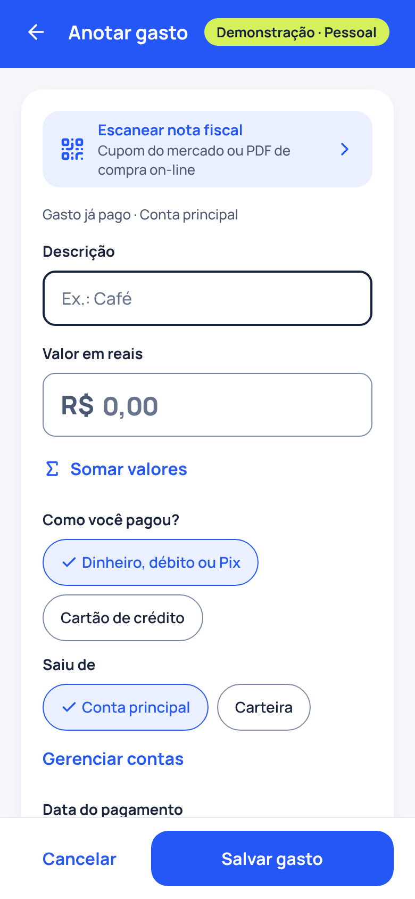
Dia a dia
Escanear nota fiscal
Para que serve
Preenche o gasto com os dados de uma nota fiscal, lendo o QR code, o PDF ou a chave de acesso.
Onde fica
ResumoAnotar gastoEscanear nota fiscal
Como usar
- Abra “Anotar gasto” e toque em “Escanear nota fiscal”, a primeira linha da tela.
- Escolha como ler a nota: “Usar a câmera”, “Escolher o PDF da nota” ou “Colar o link ou a chave”.
- Aponte a câmera para o QR code do cupom ou para o código de barras da chave de acesso.
- Confira o que foi preenchido, como valor, data e descrição, e mude o que precisar.
- Para ler o PDF do comprovante de um Pix, de uma TED, de um boleto ou de uma compra no débito, escolha “Ler comprovante de Pix ou pagamento (PDF)” na mesma folha. Em Registrar recebimento, a linha tem o mesmo nome. O PDF é lido no aparelho e não é guardado.
- Toque em “Salvar gasto”. Só um resumo da chave é guardado, nunca o CPF, a chave inteira nem o link.
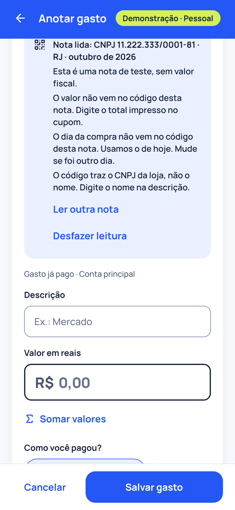
Dia a dia
Movimentos e Organizar
Para que serve
Lista os gastos e recebimentos do mês e reúne, em Organizar, os atalhos para contas a pagar, gastos fixos, cartões e orçamento.
Onde fica
Movimentos
Como usar
- Veja os registros do mês, do mais recente para o mais antigo. Use as setas ao lado do nome do mês para mudar de mês.
- Filtre por “Todos”, “Recebidos” ou “Pagos”.
- Toque em um registro para ver o detalhe, editar ou excluir.
- No card “Organizar”, abra “Contas a pagar”, “Gastos fixos e parcelamentos”, “Cartões”, “Orçamento por categoria”, “Importar extrato ou fatura” ou “Calculadoras”.
- Com duas ou mais contas de origem, aparece o filtro “Conta” para ver só os registros de uma delas.
Dia a dia
Buscar em Movimentos
Para que serve
Acha um gasto ou recebimento em todos os meses e mostra quanto deu no período.
Onde fica
MovimentosBuscar
Como usar
- Em Movimentos, toque no campo “Buscar”, no topo.
- Digite o que procura, como “luz” ou “mercado”. Não precisa de acento.
- Escolha o “Tipo” (Todos, Gastos ou Recebimentos) e o “Período”.
- Toque em “Mais filtros” para limitar por categoria, conta ou valor.
- Veja o total e a média do período e toque em uma linha para abrir o registro. Nada do que você busca é guardado.
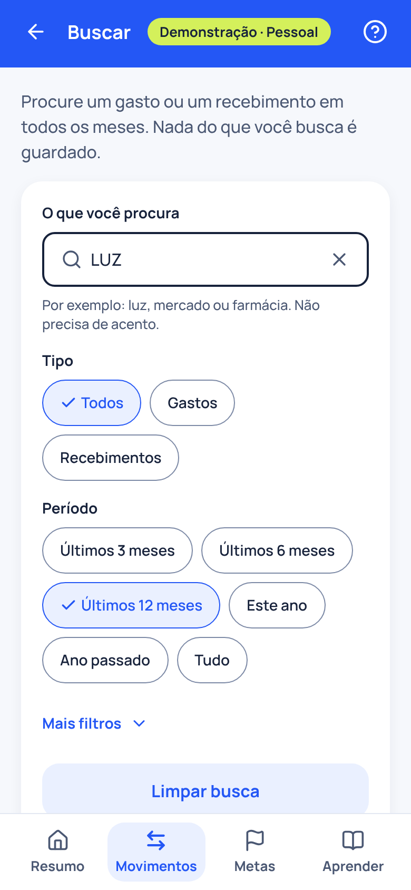
Dia a dia
Importar extrato ou fatura
Para que serve
Traz gastos, recebimentos e compras no cartão de um arquivo do banco (OFX ou planilha CSV), com revisão de cada linha antes de importar.
Onde fica
MovimentosOrganizarImportar extrato ou fatura
Também em
- ContaSuas contasImportar extrato
Como usar
- Toque em “Escolher o arquivo” e escolha o arquivo OFX ou a planilha CSV que o banco gera. Ele é lido neste aparelho e não é guardado.
- Diga para onde vão os lançamentos: “Conta” (extrato) ou “Cartão de crédito” (fatura), e escolha a conta ou o cartão.
- Se o Clarevo não reconhecer as colunas, escolha qual é a data, a descrição e o valor e toque em “Usar estas colunas”.
- Toque em “Revisar as linhas”. Marque o que vira lançamento e mude a descrição ou a categoria de uma linha, se quiser.
- Linhas com “Já anotado”, “Parece parcela” ou “Parece pagamento de fatura” vêm desmarcadas, para nada entrar duas vezes.
- Toque no botão de importar, que mostra quantos lançamentos entram. Compras no cartão só contam em Pago quando a fatura é paga.
Dia a dia
Seus últimos meses
Para que serve
Ajuda a atualizar os meses em que você não anotou nada, sem cobrança. Atualizar é opcional.
Onde fica
ResumoSeus últimos meses
Como usar
- Quando há meses sem anotação, o Resumo mostra a faixa “Seus últimos meses”. Ela some quando você decide.
- Toque em “Ver resumo” para ver, mês a mês, o que está registrado e as contas para conferir.
- Mês sem anotação não quer dizer mês sem gastos: aqui aparece só o que está registrado no Clarevo.
- Toque em “Atualizar agora” para passar pelos meses um a um. Em cada conta, use “Já paguei”, “Não houve” ou “Ainda não paguei”; nos meses, “Anotar recebimentos” ou “Anotar gastos”.
- Para deixar como está, toque em “Seguir adiante”. Nada é criado, pago nem excluído.
Contas e cartões
Contas a pagar, gastos fixos, assinaturas, cartões e contas de origem.
Contas e cartões
Contas a pagar e Já paguei
Para que serve
Reúne as contas que ainda vão vencer. Quando você paga, marca como paga e o valor passa a contar em Pago.
Onde fica
MovimentosOrganizarContas a pagar
Também em
- ResumoAinda a pagar neste mêsVer contas
Como usar
- Toque em “Anotar conta a pagar” e preencha a descrição, o valor e o vencimento.
- A lista separa “Vencidas”, “A vencer” e “Próximos meses”, com o total em “Ainda a pagar neste mês”.
- Quando pagar, toque em “Já paguei” na linha da conta e confirme com “Confirmar pagamento”.
- Para mudar o valor ou a data do pagamento, escolha “Mudar valor ou data”.
- A conta paga passa a contar em “Pago”, no mês da data do pagamento.
- Use as setas ao lado do nome do mês para ver as contas de outros meses.
Contas e cartões
Contas vencidas
Para que serve
Ajuda a conferir, de uma vez, as contas que passaram do vencimento e continuam em aberto.
Onde fica
MovimentosOrganizarContas a pagarRevisar vencidas
Como usar
- Em Contas a pagar, abra a seção “Vencidas” e toque em “Revisar vencidas”.
- Marque as contas que você já pagou.
- Com mais de uma conta de origem, escolha de onde o dinheiro saiu em “Saiu de”.
- Toque em “Marcar as selecionadas como pagas no vencimento” e confirme.
- Se uma conta não houve, toque em “Não houve”: ela sai da lista e não volta.
Contas e cartões
Gastos fixos e parcelamentos
Para que serve
Cadastra uma vez o que se repete todo mês, como aluguel e escola, ou o que você paga em parcelas. Cada mês vira uma conta a pagar.
Onde fica
MovimentosOrganizarGastos fixos e parcelamentos
Como usar
- Toque em “Novo gasto fixo ou parcelamento”.
- Em “Com que frequência?”, escolha “Todo mês” para um gasto fixo ou “Parcelado” para parcelas.
- Informe a descrição, o valor e o dia do vencimento. Se o valor muda de um mês para outro, como luz e água, marque que ele muda: o valor do cadastro vira estimativa.
- Toque em “Salvar gasto fixo” ou “Salvar parcelamento”.
- Cada mês aparece em Contas a pagar. Só o que você marca como paga entra em Pago.
- Para mudar o valor a partir de um mês ou terminar, abra o item e use “Mudar valor ou dia a partir de uma conta” ou “Encerrar gasto fixo”.
Contas e cartões
Contas do ano
Para que serve
Para contas que vencem uma vez por ano ou em poucas parcelas, como IPVA e IPTU. O Clarevo cria a conta do mês certo, dois meses antes de vencer.
Onde fica
MovimentosOrganizarGastos fixos e parcelamentosContas do ano
Como usar
- Em “Contas do ano”, toque em “Nova conta do ano”.
- Em “Como você paga?”, escolha “Uma vez no ano (cota única)” ou “Em parcelas no ano”.
- Informe o mês do vencimento, o valor e, em “O valor muda de um ano para outro?”, se ele muda.
- Toque em “Salvar conta do ano”. Nos anos seguintes, o Clarevo cria as contas automaticamente.
- Quando chegar o carnê ou o boleto com outro valor, abra a conta do ano e use, em “Ano a ano”, o botão que começa com “Informar o valor de”. Só aquele ano muda.
- Se uma conta do ano não houve, use o botão que começa com “Não houve em” (ou “Tirar as parcelas de”, quando há várias parcelas).
Contas e cartões
Assinaturas
Para que serve
Mostra quanto as assinaturas custam por mês e por ano e dá um lugar para conferir, de tempos em tempos, se cada uma ainda é usada.
Onde fica
MovimentosOrganizarGastos fixos e parcelamentosAssinaturas
Como usar
- Ao cadastrar ou editar um gasto fixo “Todo mês”, ligue “É uma assinatura?”.
- Em Gastos fixos e parcelamentos, as assinaturas aparecem no grupo “Assinaturas”, com o total por mês e por ano.
- Toque em “Revisar assinaturas” para ver cada uma e o custo por ano.
- Se não usa mais uma assinatura, toque em “Encerrar a partir de…” e escolha o mês. Isso a tira só do Clarevo: para deixar de pagar, encerre também com quem oferece o serviço.
- Toque em “Revisei minhas assinaturas” para registrar a data da revisão. O Clarevo guarda só essa data.
Contas e cartões
Cartões e faturas
Para que serve
Cadastra seus cartões de crédito para anotar as compras na fatura. A compra só entra em Pago quando você paga a fatura.
Onde fica
MovimentosOrganizarCartões
Como usar
- Toque em “Cadastrar cartão”. Informe o apelido, os 4 últimos dígitos (opcional) e os dias de fechamento e de vencimento. Nunca digite o número completo, o código de segurança nem a validade.
- Para anotar uma compra, abra “Anotar gasto”, escolha “Cartão de crédito” em “Como você pagou?” e depois o cartão.
- Toque no cartão para ver a “Fatura atual”, as anteriores e as próximas.
- Na fatura, use “Informar encargos” para juros, multa ou tarifa que o banco cobrou, e “Registrar estorno” para uma devolução.
- Depois do fechamento, toque em “Pagar fatura” e informe o valor e a data. O pagamento vira um gasto só, na data em que você pagou.
- Para desfazer um pagamento, use “Desfazer pagamento”.
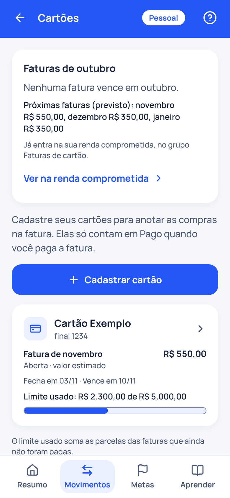
Contas e cartões
Contas de origem
Para que serve
Cadastra de onde sai o dinheiro, como a conta do banco e a carteira, para escolher uma em cada gasto, pagamento e aporte. É só a origem: o Clarevo não guarda saldo.
Onde fica
ContaSuas contas
Como usar
- Toque no círculo com as suas iniciais, no canto do cabeçalho, para abrir Conta.
- Em “Suas contas”, toque em “Adicionar conta”, dê um nome e escolha o tipo: conta bancária, dinheiro ou outra.
- Nos gastos, pagamentos e aportes, escolha a conta em “Saiu de”, “Entrou em” ou “Foi para”. A principal já vem marcada.
- Toque em uma conta para renomear, usar “Tornar principal”, arquivar ou excluir.
- O Clarevo não calcula saldo por conta. A conta mostra só de onde o dinheiro saiu.
Planejar
Orçamento, renda comprometida, metas, simulador e calculadoras.
Planejar
Orçamento por categoria
Para que serve
Define quanto você pretende usar por mês em cada categoria de gasto e mostra quanto já foi usado.
Onde fica
MovimentosOrganizarOrçamento por categoria
Como usar
- Em “Definir orçamento”, escolha uma categoria, como Mercado ou Lazer.
- Informe o “Valor por mês” e “A partir de” qual mês ele vale. Os meses anteriores não mudam.
- Toque em “Salvar orçamento”.
- Em “Com orçamento”, cada categoria mostra o usado no mês, quanto falta e o percentual.
- No orçamento, cada compra no cartão conta a partir do mês da compra: a 1ª parcela no mês da compra, a 2ª no mês seguinte, e assim por diante, mesmo antes de a fatura ser paga. Em Pago, ela só entra quando a fatura é paga. Gastos e contas pagas contam no mês da data do pagamento.
- Para mudar ou tirar um orçamento, toque na categoria e use “Tirar o orçamento”.
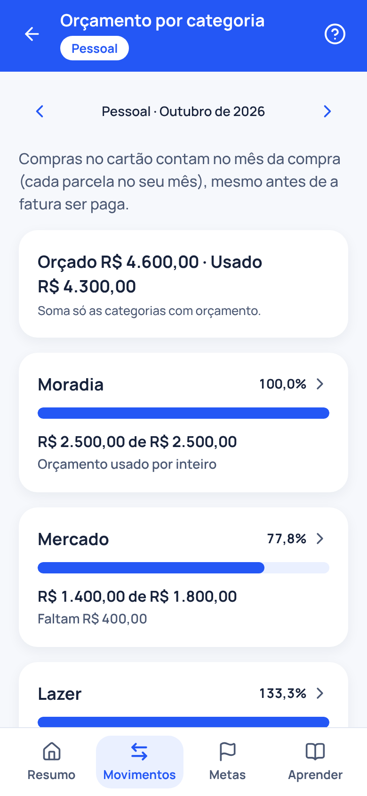
Planejar
Renda comprometida e limite pessoal
Para que serve
Mostra quanto da sua renda de referência já tem destino em contas, parcelas e faturas, e deixa você escolher um limite seu.
Onde fica
MetasSeu mêsVer renda comprometida
Também em
- ResumoAinda a pagar neste mês
Como usar
- Toque em “Informar renda de referência” e digite quanto costuma cair na sua conta por mês. Esse valor só calcula percentuais: ele não conta como recebido.
- Veja o percentual da renda que já tem destino no mês, por grupo: gastos fixos, parcelamentos, contas do ano, faturas de cartão e outras contas.
- Em “Próximos meses”, veja a previsão dos meses seguintes e, em “O que muda”, quando uma parcela termina.
- Em “Seu limite”, toque em “Escolher meu limite” e informe até quantos por cento da renda você quer comprometer. A escolha é sua: o Clarevo não sugere um valor.
- Se a renda mudar, toque em “Alterar” na renda de referência.
- Metas e aportes não entram no percentual: guardar não é conta a pagar.
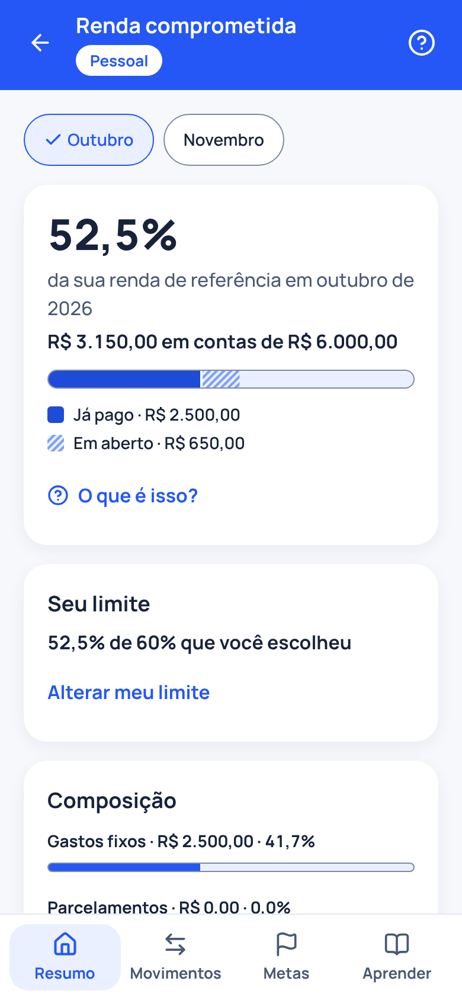
Planejar
Metas e reserva
Para que serve
Acompanha o que você está juntando para uma viagem, um curso ou imprevistos, mostrando só o que você registrou como guardado.
Onde fica
Metas
Como usar
- Em “Reserva para imprevistos”, toque em “Calcular minha reserva” para ver quantos meses de gastos essenciais você quer cobrir.
- Toque em “Nova meta”, dê um nome e informe o valor e, se quiser, o prazo.
- Quando guardar dinheiro, abra a meta e use “Registrar aporte”. O valor guardado só anda com o que você registrar.
- Para usar o dinheiro, use “Registrar resgate”. Resgate não entra como recebido.
- Aportes e resgates não entram em Pago nem em Recebido: o dinheiro continua seu, só mudou de lugar.
- Quando a meta chegar ao valor, use “Concluir meta”.
Planejar
Plano de guardar
Para que serve
Pergunta se você consegue guardar um valor por mês e monta um plano em etapas com os seus números, sem contar rendimento.
Onde fica
MetasVocê consegue guardar algum valor por mês?
Também em
- ResumoPrimeiros passosPlanejar quanto guardar
Como usar
- No topo de Metas, responda “Você consegue guardar algum valor por mês?” com “Sim, consigo”, “Agora não” ou “Responder depois”.
- Com “Sim, consigo”, informe quanto por mês. O plano mostra etapas de 1, 3 e 6 meses de gastos essenciais e o mês previsto de cada uma.
- Se o plano pedir, informe quanto você gasta por mês com o essencial: moradia, mercado, transporte, saúde e educação.
- Toque em “Usar este plano” para criar ou atualizar a sua reserva com o valor por mês.
- Com “Agora não”, você pode começar uma reserva mínima, a partir de R$ 100,00, ou ver passos pequenos. Nada é gravado até você escolher.
- Só você vê a sua resposta, e a pergunta pode voltar mais tarde, sem cobrança.
Planejar
Simulador
Para que serve
Faz contas com hipóteses suas: quanto guardar por mês, em quanto tempo ou quanto você pode ter. Nada é gravado.
Onde fica
MetasFazer as contasSimular um plano
Como usar
- Em “O que você quer saber?”, escolha “Quanto guardar por mês”, “Em quanto tempo” ou “Quanto posso ter”.
- Preencha os campos. A taxa de rendimento é a que você quer testar: o Clarevo não sugere taxas.
- Toque em “Simular” e veja o resultado, as hipóteses e a tabela “Ano a ano”.
- Marque “Descontar inflação? (opcional)” para ver o valor em dinheiro de hoje.
- Para guardar o resultado, toque em “Criar meta com estes valores”.
- É uma simulação com as hipóteses que você informou, não uma promessa de rendimento.
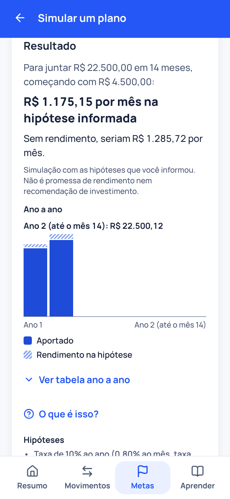
Planejar
Calculadoras
Para que serve
Contas rápidas com os valores que você informa. Nada é gravado.
Onde fica
MovimentosOrganizarCalculadoras
Também em
- MetasFazer as contasCalculadoras
- AprenderCalculadoras
Como usar
- Abra “Calculadoras” e escolha uma, organizadas em “Decidir uma compra”, “Dívidas e atrasos” e “Guardar e dividir”.
- Digite os valores. O resultado aparece enquanto você digita, sem botão de calcular.
- As taxas são sempre as que você digita: o Clarevo não traz taxa pronta.
- Confira as “Hipóteses”, logo abaixo do resultado.
- Algumas calculadoras oferecem “Anotar como parcelamento” ou “Anotar como gasto fixo”, para guardar o que você calculou.
Uma por uma
- Antes de financiar: Parcela, juros e o que muda se juntar antes
- Parcelado ou à vista?: Descubra os juros embutidos no parcelado
- Quanto custa por ano?: Assinaturas e gastos que se repetem
- Quanto custa uma dívida?: Rotativo, cheque especial ou empréstimo
- Quitar antes ou adiantar parcelas: Uma estimativa de quanto dos juros sai da conta
- Multa e juros por atraso: Com os valores do boleto
- Em que ordem quitar as dívidas?: Duas ordens de pagamento, lado a lado
- Reserva para imprevistos: Quantos meses seus gastos essenciais cobrem
- Juntar para um objetivo: Quanto guardar por mês ou em quanto tempo
- Dividir as contas da casa: Partes iguais ou pela renda de cada pessoa
Planejar
Antes de financiar
Para que serve
Mostra a parcela, os juros totais e quanto a parcela pesa na renda antes de você comprar a prazo, e compara com juntar antes.
Onde fica
MovimentosOrganizarCalculadorasAntes de financiar
Como usar
- Informe o “Preço à vista do bem” e a “Entrada”, se houver.
- Digite o “Número de parcelas” e a “Taxa de juros ao mês (%)”, que está na proposta do banco ou da loja.
- Em “A primeira parcela vence em 1 mês?”, escolha Sim ou Não.
- Para ver quanto a parcela pesa, informe “Sua renda líquida por mês”. A renda de referência entra automaticamente, e mudar aqui não altera a referência.
- Veja o total pago, os juros e a alternativa “Juntar antes”, com quanto tempo leva para juntar o valor.
- É uma estimativa: as condições oficiais são as da proposta, e vale pedir o CET.
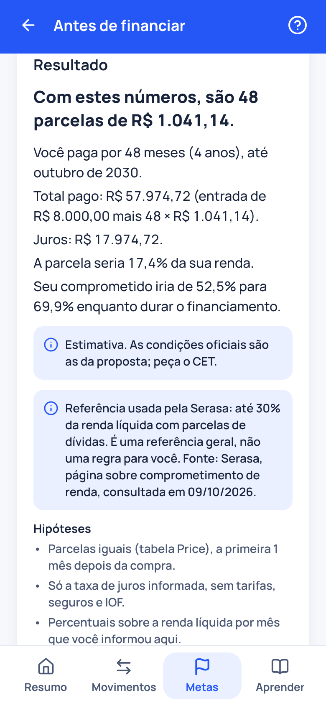
Planejar
Plano para quitar dívidas
Para que serve
Compara duas ordens de pagamento das suas dívidas, lado a lado, para você ver o efeito de cada uma. Nada é gravado.
Onde fica
MetasFazer as contasEm que ordem quitar as dívidas?
Como usar
- A lista já vem com os seus parcelamentos em aberto. Para outras dívidas, toque em “Acrescentar dívida”, de 1 a 10.
- Escolha o tipo: “Parcelada” ou “Saldo com juros”.
- Preencha o valor da parcela, as parcelas que faltam e a taxa ao mês, ou o saldo de hoje, a taxa e quanto você paga por mês. As taxas são as do seu contrato.
- Em “Quanto a mais você consegue pôr por mês nas dívidas?”, informe um valor extra, se houver.
- Compare “Maior taxa primeiro” e “Menor dívida primeiro”: juros totais, mês em que cada dívida termina e os detalhes de cada ordem.
- O Clarevo não diz qual ordem escolher e não oferece crédito.
Aprender e ajuda
Temas curtos, o guia, o botão ? e o tour.
Aprender e ajuda
Aprender
Para que serve
Explicações curtas sobre contas, juros e o próprio Clarevo, com exemplos fictícios e fontes. Funciona no aparelho, sem registrar o que você lê nem o que busca.
Onde fica
Aprender
Como usar
- Em “Comece por aqui”, leia os três temas para começar.
- Em “Neste mês”, veja os temas do mês: 13º salário e contas do começo do ano no fim do ano, volta às aulas no começo, Imposto de Renda de fevereiro a maio e férias em junho e julho. O card some nos meses sem tema.
- Use “Ir para” para pular a uma seção: “Usar o Clarevo”, “Organizar o mês”, “Juros e crédito”, “Dinheiro no tempo” ou “Dúvidas frequentes”.
- Busque em “Buscar um tema ou uma função”. A busca acha temas, telas do app e passos do guia.
- Abra um tema para ver o resumo, o exemplo com “Ver a conta”, as fontes e, quando houver, a ação em “No Clarevo”.
- O Clarevo não registra quais temas você abre nem o que busca.
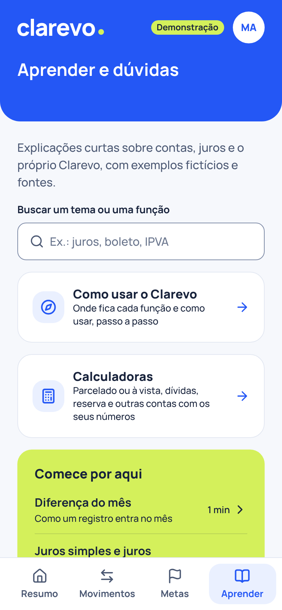
Aprender e ajuda
Guia, ajuda no lugar e tour
Para que serve
Reúne o passo a passo de cada função. A ajuda também aparece no próprio lugar, com o botão ?, e num tour curto na primeira entrada.
Onde fica
AprenderComo usar o Clarevo
Como usar
- Em Aprender, toque em “Como usar o Clarevo”.
- Escolha uma função na lista, organizada em grupos. Cada uma mostra “Para que serve”, “Onde fica” e “Como usar”.
- Toque em “Abrir” e o nome da tela para ir direto a ela.
- Em algumas telas, o botão “?” no cabeçalho abre o “Como usar” daquela tela, com o atalho “Ver no guia”.
- Para rever o tour de boas-vindas, toque em “Ver o tour de novo”, no topo do guia.
- Nada do que você abre ou busca no guia é registrado.
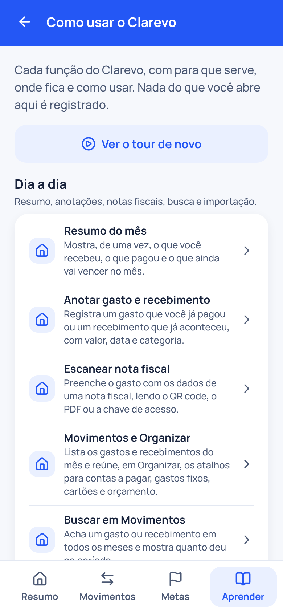
Conta e privacidade
Lembretes, ocultar valores, exportar e quem vê os dados.
Conta e privacidade
Lembretes de vencimento
Para que serve
Um aviso no dia anterior ao vencimento de cada conta a pagar. Funciona no app para celular.
Onde fica
ContaLembretes
Como usar
- No app para celular, abra Conta e ligue “Lembretes de contas a pagar”.
- Permita os avisos quando o aparelho pedir.
- Escolha o “Horário do aviso”.
- O aviso não mostra valores nem descrições na tela bloqueada e fica só neste aparelho.
- Se o aparelho bloquear os avisos, use “Abrir configurações”.
- Na versão para navegador, os lembretes não existem.
Conta e privacidade
Ocultar valores e biometria
Para que serve
Esconde os valores em reais da tela e, no celular, pede biometria ao abrir o app. As escolhas valem só para este aparelho.
Onde fica
ContaPrivacidade neste aparelho
Também em
- ContaWidget na tela inicial
Como usar
- Toque no olho, no cabeçalho, para “Ocultar valores” ou “Mostrar valores” na hora. Os valores aparecem como R$ ••••.
- Em telas estreitas, o olho não aparece. Ligue “Ocultar valores ao abrir”, em Conta: os valores ficam ocultos agora e sempre que você abrir o app.
- No celular com biometria configurada, ligue “Pedir biometria ao abrir”. Sair da conta nunca depende dela.
- O arquivo de “Exportar meus dados” mostra os valores, mesmo com a ocultação ligada.
- Em Conta, “Widget na tela inicial” guarda se o widget mostra valores: “Mostrar valores no widget” começa desligado. O widget só existe quando o app estiver nas lojas.
Conta e privacidade
Exportar meus dados
Para que serve
Leva seus gastos e recebimentos para uma planilha (CSV) ou para um resumo em PDF, montado neste aparelho.
Onde fica
ContaExportar meus dados
Como usar
- Em Conta, no card “Exportar meus dados”, toque em “Escolher período e formato”.
- Escolha o “Período”, como “Este mês”, “Últimos 12 meses” ou “Tudo”.
- Escolha o “Formato”: “Planilha (CSV)” ou “Resumo em PDF”.
- Toque em “Preparar arquivo”. Com a biometria ligada, o aparelho pede a confirmação antes.
- Em “Arquivo pronto”, baixe ou compartilhe o arquivo. O Clarevo não guarda cópia dele.
- O arquivo tem dados financeiros: guarde e compartilhe só com quem você escolher.
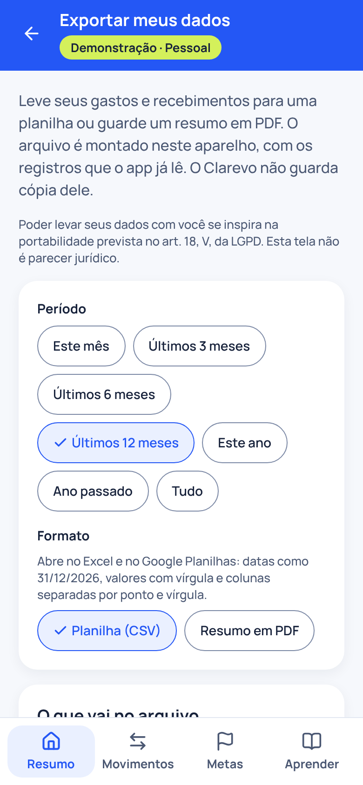
Conta e privacidade
Família
Para que serve
Reúne até 6 pessoas para ver e anotar as contas da casa em conjunto. O Pessoal de cada pessoa continua só dela.
Onde fica
ContaFamília
Como usar
- Em Conta, no card “Família”, toque em “Criar Família”, dê um nome e confirme. Quem cria é titular.
- Toque em “Convidar”, escolha “Anota e vê” ou “Só vê” e toque em “Gerar link”. Envie o link com “Compartilhar”: ele vale por 7 dias e serve uma vez.
- Quem recebe o link entra ou cria a conta, vê o nome da Família e quem convidou e toca em “Aceitar convite”.
- Com Família, o seletor “Pessoal” e “Família” aparece no topo das abas: cada tela usa o contexto escolhido, e os formulários dizem onde a anotação vai ficar.
- O titular muda o papel de cada pessoa, remove, usa “Passar a titularidade” ou “Encerrar a Família”. Quem não é titular usa “Sair da Família”.
- O que alguém anotou continua na Família depois que sai, como “ex-membro” e o primeiro nome.
Conta e privacidade
Quem vê estes dados
Para que serve
Mostra quem tem acesso aos registros: em Pessoal, só você; na Família, as pessoas e o papel de cada uma. A empresa que oferece o plano não vê seus registros.
Onde fica
ResumoQuem vê estes dados?
Como usar
- No fim do Resumo, de Contas a pagar e de outras telas, toque em “Quem vê estes dados?”.
- Veja o nome e a permissão de cada pessoa com acesso. Em Pessoal, só você vê, anota, edita e exclui. Na Família, aparecem as pessoas e o papel de cada uma.
- A empresa que oferece o Clarevo como benefício administra só o seu acesso ao plano, não os seus registros.
- Gastos fixos, renda de referência, metas, simulações e a revisão dos últimos meses também são só seus no Pessoal.
- Para uma resposta mais completa, toque em “A empresa vê meus gastos?”.